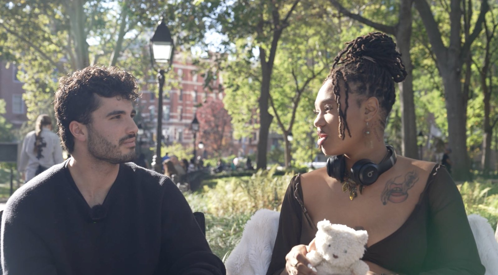
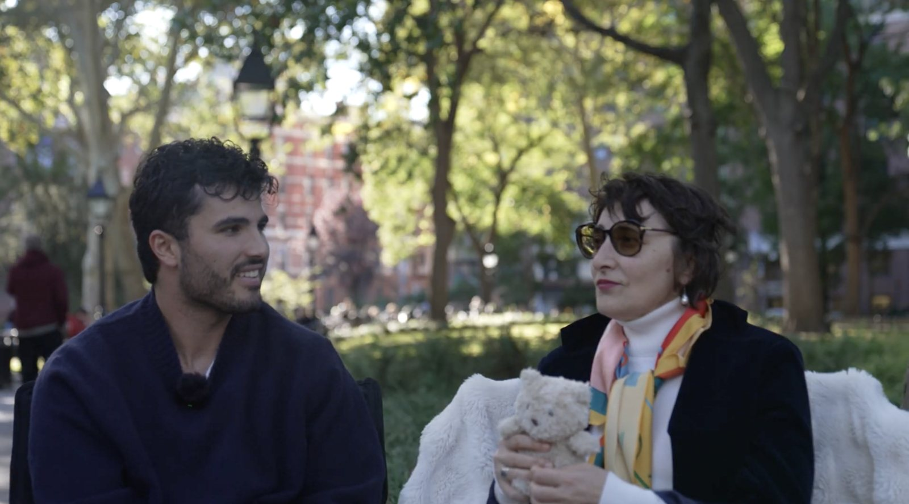
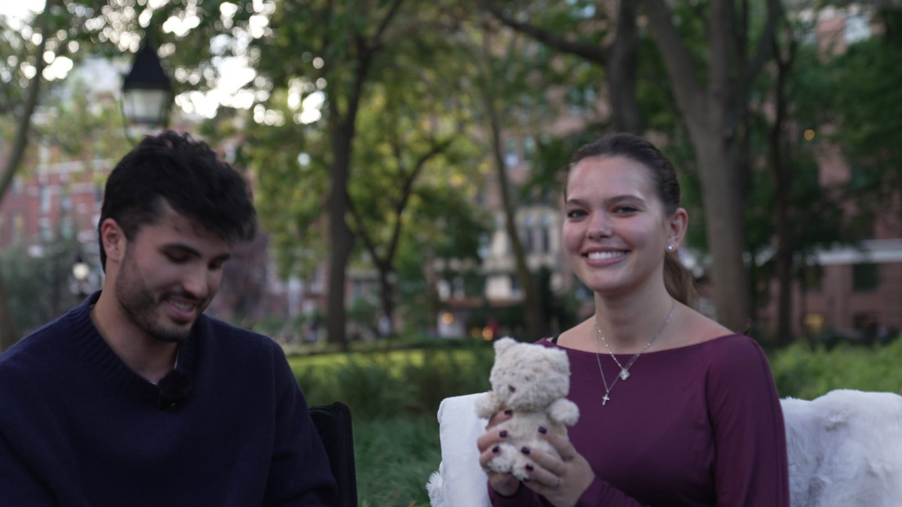
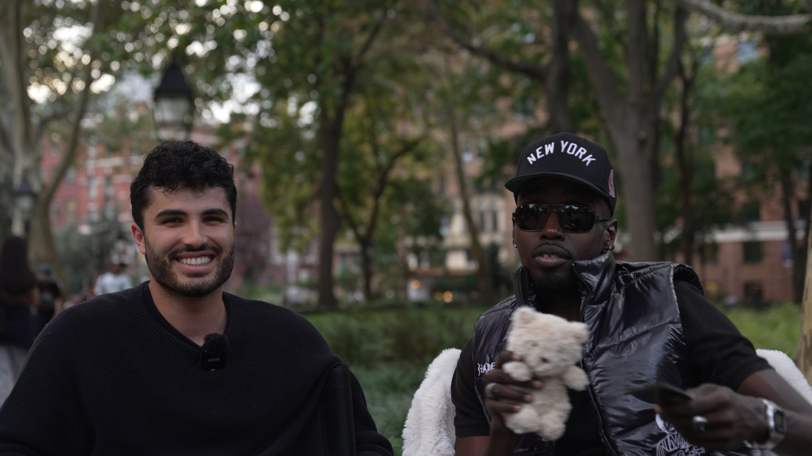
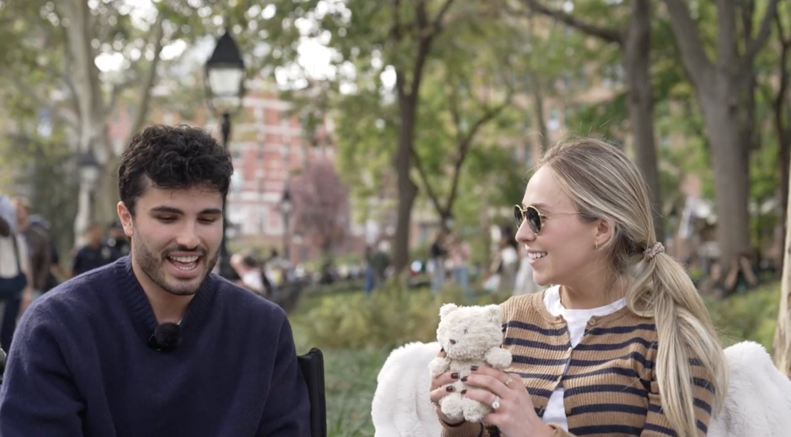
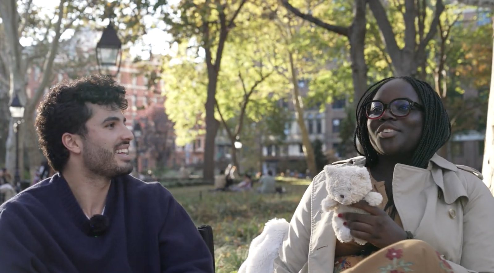
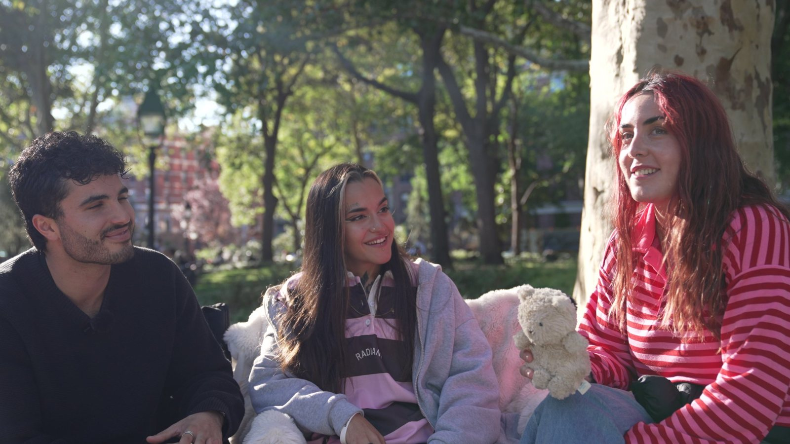
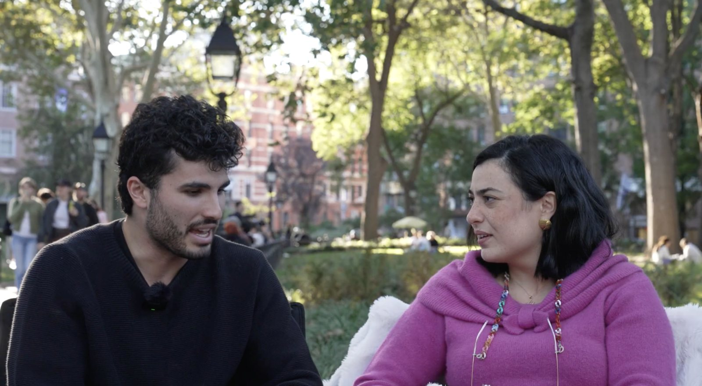
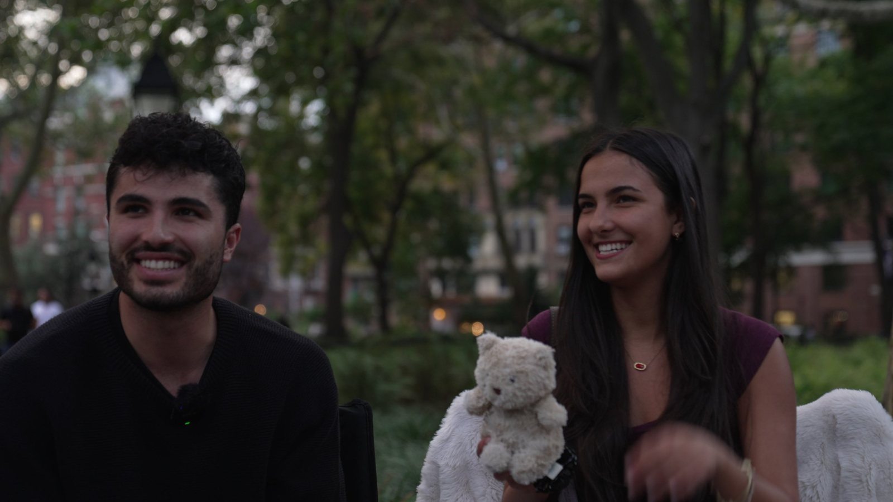

Explore the Archive
Hundreds of people have sat down and shared the most meaningful moment of their life. Each one was shared in person, on camera, and with consent. Here are a few of them.
No. 1 · Featured moments

I was four years old. It was when I first realized I wanted to be a singer. I was in my church and I remember listening to everybody and something just kind of clicked for me. So I walked up to the pulpit and asked them if I could sing and I wrote a song, impromptu on the spot.
Purpose · Creativity and Expression

I became a mother when I was 21. ... when my kids grew up and I was able to spend some time with them as adults, and when we travel together and we were able to just talk and have fun and play games and just communicate like adults, I think that's like, yes, so happy ...
Parenthood · Connection

... this younger girl came up to me after my recital. ... she said that I inspired her to approach music differently and embrace her femininity through her voice.
Mentorship and Teaching · Creativity and Expression · Purpose

... I remember the feeling of going from not knowing what purpose meant to just being comfortable that I now have a drive, something that drives me for the rest of my life.
Parenthood

... it was really hearing my dad say how proud he was of me. ... we were able to have this very beautiful meaningful conversation in a very emotional moment.
Family · Celebration

... there's power in giving people a voice to tell their story especially when they're super early in the game of something. ... everyone talks about this idea of purpose, and that was the moment where it really stuck for me.
Purpose · Accomplishment · Service

... suddenly I say okay there is another way to live ... and to be grateful about all the things that we have only for being human.
Resilience and Suffering · Gratitude and Perspective

... my dad and I went fishing when I was really, really little and he was like, oh, you should remember this moment for the rest of your life ... I did, I remembered it for the rest of my life.
Family

... she has a support system. She has me. And even though she's not blood, she will forever be my family.
Family · Love · Growth and Discovery
No. 2 · What the moments have in common
I call them Meaning Drivers. They are the values that make a moment meaningful, and every moment above carries a few of them.
No. 3 · On its way
Soon you'll be able to explore every moment as a night sky of stars, one for each person. Join the letter and I'll tell you when it opens.
These are other people's moments. The Meaning Map helps you read yours.
The moments you write for your Meaning Map join the archive without your name. They are shown to others only if you say yes.
Every moment in the archive was shared by choice, in person and on camera.
Apply to share your moment